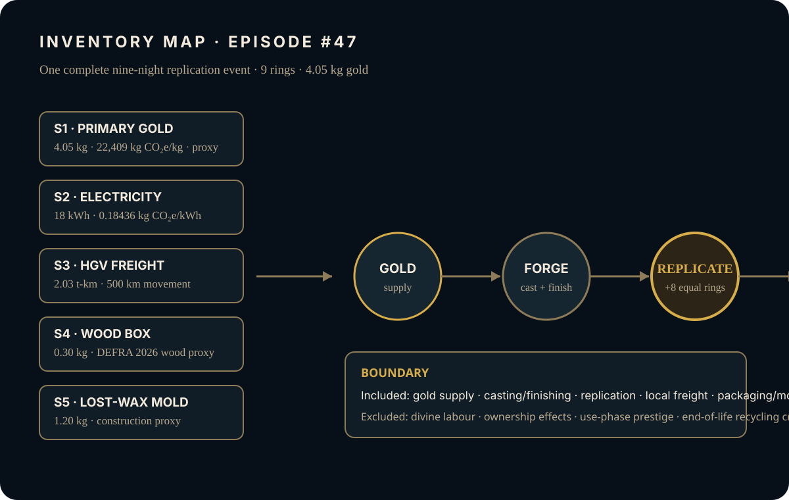
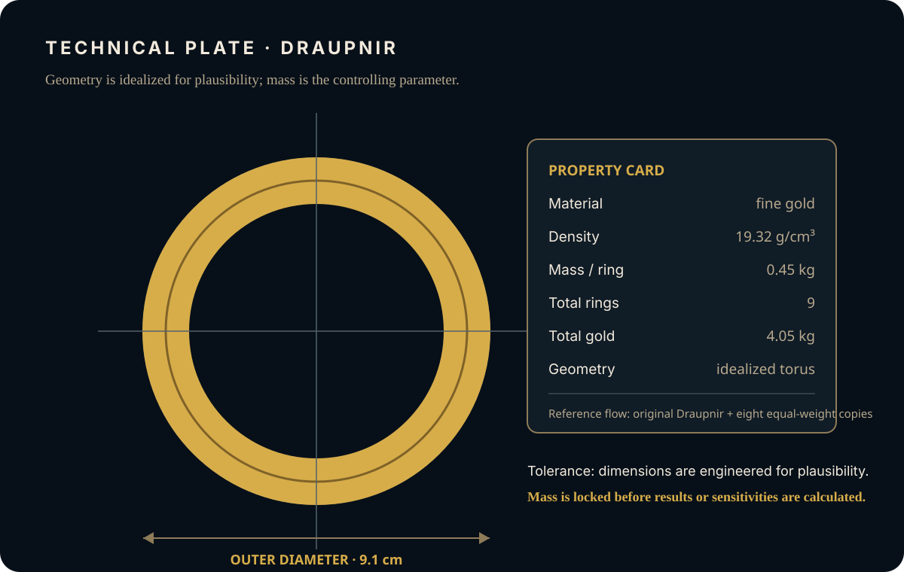
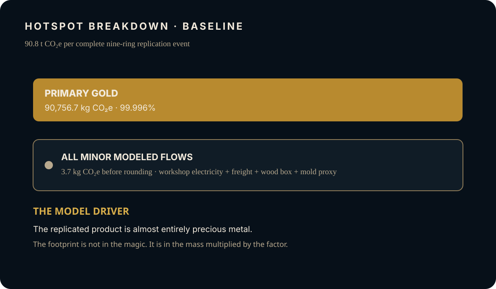

EPISODE #47 · MYTHS & LEGENDS
Draupnir
If magic is treated as physical gold generation, where does the burden of one nine-night replication event land?
THE SUBJECT
A tiny object. A recurring material burden.
The approved episode models Draupnir as material replication, not as use-phase energy. One reporting event contains nine rings: the original arm-ring and eight equal-weight copies delivered over one nine-night interval. Magic is represented only as the physical generation of equal gold mass.
The boundary includes primary gold supply, workshop casting and finishing, one replication event, local freight, packaging and a mold proxy. Divine labour, ownership effects, use-phase prestige and end-of-life recycling credit are excluded. The model stops when the ninth ring is available for use.
Reference flow
9 rings at 0.45 kg each: 4.05 kg of fine gold in one complete event.
Frozen geometry
Idealized gold torus / arm-ring, 9.1 cm outer diameter and 19.32 g/cm³ density; mass is the controlling parameter.
Main hotspot
Primary gold contributes 90,756.7 kg CO₂e, or 99.996% of the baseline result.
Proxy warning
The primary-gold factor is an external mine-intensity proxy; DEFRA 2026 is used where representative for the other modeled flows.
VISUAL MODEL
Gold in. Rings out.
The analytical model freezes the ring mass and geometry before applying the disclosed material, energy and logistics factors.


LIFE CYCLE INVENTORY
Inventory by impact
Flows, quantities and emission-factor bases reproduce the approved episode. The displayed primary-gold factor is a rounded external proxy; the published hotspot contribution is retained as reported.
| Stage | Component / activity | Activity data | Climate change | Modelling basis |
|---|---|---|---|---|
| Material supply | Primary gold | 4.05 kg | 90,756.7 kg CO₂e | S1 · 22,409 kg CO₂e/kg · external S&P gold mine-intensity proxy. Published hotspot contribution retained as reported. |
| Workshop | Workshop electricity | 18 kWh | ≈3.32 kg CO₂e | S2 · 0.18436 kg CO₂e/kWh · DEFRA 2026 UK grid + T&D + WTT composite. |
| Inbound logistics | Average HGV freight | 2.03 t-km | ≈0.21 kg CO₂e | S3 · 0.10356 kg CO₂e/t-km · DEFRA 2026; 500 km HGV movement converted to tonne-kilometres before calculation. |
| Packaging | Wood box | 0.30 kg | ≈0.081 kg CO₂e | S4 · 0.26950 kg CO₂e/kg · DEFRA 2026 primary wood proxy. |
| Craft process | Lost-wax mold | 1.20 kg | ≈0.090 kg CO₂e | S5 · 0.074996 kg CO₂e/kg · DEFRA 2026 construction proxy. |
Included
Primary gold supply; workshop casting and finishing; one replication event; local freight; packaging and mold proxy.
Excluded
Divine labour; ownership effects; use-phase prestige; end-of-life recycling credit.
Cut-off event
The model stops when the ninth ring is available for use.
Factor disclosure
DEFRA 2026 is used where representative. The primary-gold factor is an external mine-intensity proxy because DEFRA does not provide a gold mining factor.
HOTSPOT
The footprint is in the gold
Primary gold carries practically the entire result; the non-gold flows remain explicit but marginal.

Main result
90.8 t CO₂e
Per complete nine-ring replication event.
Primary gold
99.996%
90,756.7 kg CO₂e in the published baseline.
Minor modeled flows
3.7 kg CO₂e
Workshop electricity, freight, packaging and mold proxy combined before rounding.
Material scale
4.05 kg gold
Nine equal 0.45 kg rings are made available in the modeled event.
Mass sensitivity
0.25 kg/ring → 50.4 t CO₂e
0.45 kg/ring → 90.8 t CO₂e
0.75 kg/ring → 151.3 t CO₂e
Only ring mass changes; ring count and emission factors remain fixed.
Gold-proxy sensitivity
12,200 kg/kg → 49.4 t CO₂e
22,409 kg/kg → 90.8 t CO₂e
32,689 kg/kg → 132.4 t CO₂e
Mass, boundary and minor flows remain fixed.
Gold dominates
Primary gold contributes 99.996% of the baseline result.
Replication is mass
The ninth-night event is modeled as 4.05 kg of gold made available.
Logistics are marginal
Energy and freight remain explicit while minor modeled flows total only 3.7 kg CO₂e.
Proxy choice matters
Changing only the gold factor shifts the result from 49.4 to 132.4 t CO₂e.
THE VERDICT
The footprint is not in the magic. It is in the mass multiplied by the factor.
The myth scales because material mass scales first. Not a verified LCA; a transparent narrative engineering reconstruction.